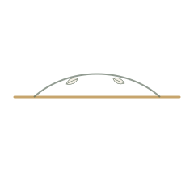

Skin quality
Skin care focuses on texture, clarity, sensitivity and barrier respect.
portrait crop motion
Concept 20 · Halo · Home
A premium Sofiati direction shaped around professional evaluation, laser precision, skin quality and ethical care.


physician profile stamp
Logo, FS monogram, portrait treatment, botanical detail and custom icons are built as a local Sofiati asset pack for this page.
physician profile pathway
A simple first view of who Franciele is, what she offers and where to begin.
Biomedical background with aesthetics, cosmetology and laser focus.
02Advanced aesthetic biomedicine shaped by individual evaluation.
03Laser hair removal and rejuvenation topics with aftercare.
04Skin cleansing, sensitivity, spots, melasma and texture education.
05Natural-looking expectations without invented outcomes.
06Short education for better consultation questions.
FAQ
Brief answers support clarity while returning treatment decisions to individual evaluation.
FAQ
Credentials
CRBM 6277, clinical pathology background, aesthetics, cosmetology and laser specialism guide the care path.
About
Care philosophy
Treatment decisions begin with listening, suitability and natural-looking expectations.
Explore careLaser care
Laser hair removal and rejuvenation topics are framed through preparation, indication and aftercare.
View laser
Image-led care
A soft visual pause keeps the experience calm and easy to scan.


Skin care
Skin cleansing, sensitivity, spots, melasma and texture education stay clear and careful.
View skin
Responsible results
No invented outcomes. Expectations stay linked to protocol, sessions, characteristics and aftercare.
ResultsMission
The mission is to make advanced aesthetic biomedicine feel precise, human and ethically clear.
Missionphysician profile pathway
A quiet reminder that treatment choices begin with individual context.
Skin care focuses on texture, clarity, sensitivity and barrier respect.
portrait crop motionTechnology supports carefully selected protocols, not promises.
Care protects expression and avoids pressure-led aesthetic decisions.
Values
The values page turns the Sofiati tone into practical decisions before, during and after care.
Values
Journal
Laser, skin and aftercare topics help visitors arrive with better consultation questions.
JournalClient experience
Testimonials and patient media are only used when reviewed and approved.
TestimonialsConsultation
A short consultation route keeps decisions calm, private and evaluation-led.
CRBM 6277 · Londrina, PR